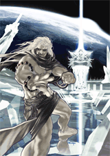

Vous pouvez acheter des contenus supplémentaires (ou « histoires ») pour ce jeu en sélectionnant « Acheter un contenu supplémentaire » à partir du menu principal. Pour cela, il vous faudra disposer de Wii Points (à acheter séparément).
● L’écran « Acheter un contenu supplémentaire »
Vous pouvez choisir ici l’histoire que vous souhaitez acheter parmi la liste des histoires disponibles. Vous trouverez également certaines informations, comme la description de l’histoire sélectionnée, les Wii Points dont vous disposez, le nombre de Wii Points requis pour acheter cette histoire et le nombre de blocs nécessaires. Sélectionnez « Oui » pour valider votre achat.
En cas d’espace libre insuffisant dans la mémoire de la console Wii...
Afin de sauvegarder n'importe quelle histoire, vous aurez besoin d'un certain nombre de blocs disponibles sur votre console Wii (le nombre de blocs requis pour chaque histoire est renseigné ci-dessous). S’il n’y a pas assez d’espace libre, effacez des données ou copiez-les sur une carte SD depuis l’écran de gestion des données (veuillez vous référer au mode d'emploi Wii – Chaînes et paramètres pour plus de détails).
Si vous n’avez pas assez de Wii Points...
Visitez la chaîne boutique Wii ou la page d’accueil de Nintendo pour de plus amples informations sur l’achat de Wii Points.
● Supprimer les histoires téléchargées
Vous pouvez enlever les histoires achetées de la mémoire de votre console Wii en les effaçant depuis l’écran de gestion des données (veuillez vous référer au mode d'emploi Wii – Chaînes et paramètres pour plus de détails).
 |
|
 |
L’histoire des Sélénites « La planète bleue de jadis »
Disponible : 07/08/2009
Wii Points: 300 Wii Points
Blocs requis : 5 blocs
|
 |

Après leur grande bataille, les Sélénites, plongés dans un sommeil profond jusqu’à ce que leur heure arrive, se sont lancés dans un voyage sans fin. Cependant, l'un d'eux se réveille après avoir fait un rêve terrible. Il constate alors que les cristaux de la lune brillent d'un rouge menaçant...
|
 |
 |
 |
 |
|
|
|